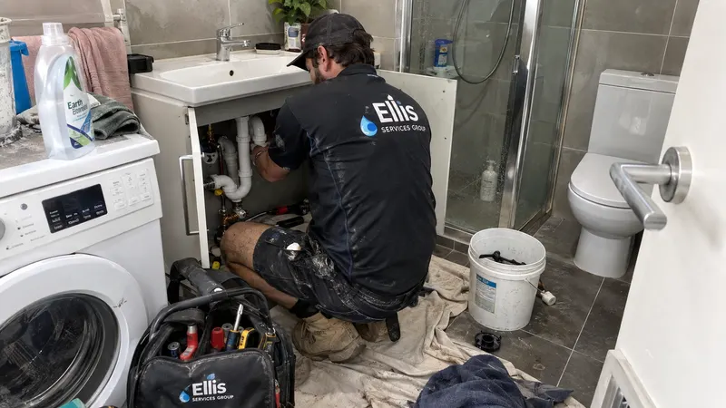

Taps & mixers
AUD $165–$420
per repair · incl. GST
Tap and mixer repairs and replacement for dripping taps, leaking mixers, worn fittings and fixture problems in Perth properties.
Call 0413 477 667
A tap or mixer problem is usually straightforward to describe: identify the room, fixture type, visible leak and whether the issue is constant or only appears while the fixture is being used. A photo can help if it can be taken without getting close to water or damaged components.
Ellis Services Group repairs and replaces taps and mixers in Perth kitchens, bathrooms, laundries, rental properties and commercial premises. We inspect the fixture on site and confirm the repair or replacement scope and written quote. If the fixture is leaking heavily or water is spreading, include that in the first message.
Request a repairEllis Price Guide
A practical guide for a standard tap or mixer repair at a Perth property.
AUD $165–$420
per repair · incl. GST
Guide conditions: These AUD ranges are for standard-hours, standard-scope work and are incl. GST. Access, materials, extra pipe, cable or circuit work, compliance work, emergency or after-hours work and unforeseen repairs are confirmed in a written quote before work proceeds.
Find related Perth service information and practical guidance.
View Toilet repairs →Find related Perth service information and practical guidance.
View Water leak detection →Find related Perth service information and practical guidance.
View Contact Ellis Services Group →The fitting type, condition, accessible connections and availability of compatible parts affect whether repair or replacement is practical. A surface fitting may be straightforward to access, while concealed connections require a different scope. We confirm the fitting, connection work and any access work in the quote.

Drips, reduced flow, temperature-control changes, movement at a fitting and any water escaping into cabinetry or walls are useful starting observations.
A symptom can have more than one cause. We arrange an on-site assessment, check the reported symptoms and confirm the repair plan and written quote.
Include the Perth address or suburb, the room or area affected and any access instructions that matter.
Explain what you can see, hear or notice, when it began and whether it is getting worse or recurring.
For rental, strata or agency requests, include the work-order reference, occupant contact and approval pathway where relevant.
Explore the related service topic.
Explore Water leak detection →Explore the related service topic.
Explore Fixtures & appliances →View the broader service overview.
Explore Plumbing →Find your locality and make an enquiry.
View service areas →Send the details that matter to your property.
Send an enquiry →No. Describe the observable change and property context. We inspect the affected area on site to establish the cause and confirm the repair scope. If more access is needed, we agree it with you first.
Photos are optional: email safely taken photos to maxinemaintenance.au@outlook.com. You can contact us without photos. Do not approach a hazard, remove covers or dismantle equipment to take a photo.
Yes. Tell us the fixture location, whether it drips constantly and any other changes you have noticed.
No. It is safer to describe the problem and leave the fitting intact for assessment.
Yes. Property managers can include work-order and access details.
For managed properties, include the work order, access contact and approval pathway.
Contact Ellis Services Group